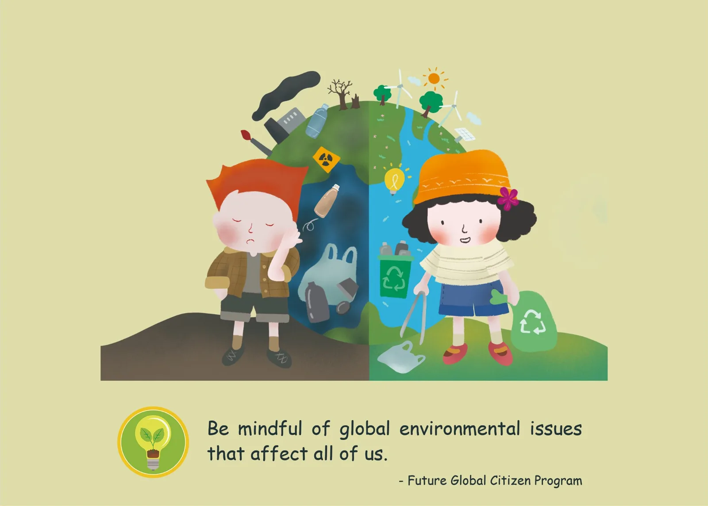
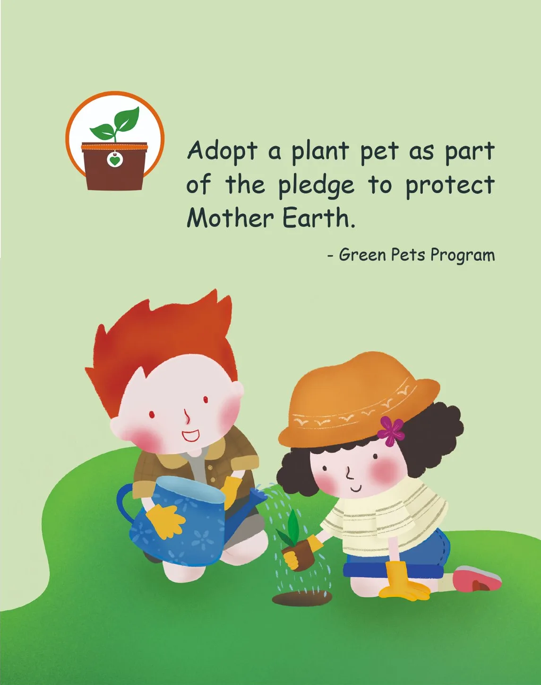

Drawing a greener classroom
I used recurring characters and visual contrasts to make environmental lessons approachable for young students.
- Partner
- Cyrus J. Morris Elementary School
- Programs
- Future Global Citizen · Green Pets
- My role
- Illustrator · Character design
- Made
- Student & teacher workbooks

A big topic, made small enough to hold
Cyrus J. Morris Elementary School in Walnut, California, was building an environmental education project for its students. They needed workbooks for students and teachers, and they needed them to feel like something a child would actually want to open.
I was invited to illustrate both books. The brief was simple and hard at the same time: make climate, waste, and care for nature feel friendly, not frightening.
Two friends to walk kids through it
I created two characters, a red-haired boy and a girl in an orange hat. They appear on every page, so students follow friends rather than a lecture.
In the opening spread, the boy stands on a gray, polluted half of the Earth while the girl tidies up a green, bright half. Kids see the difference before they read a single word.
Make a big topic feel friendly enough that a seven-year-old wants to turn the page.The brief I gave myself

A plant pet, a promise
The Green Pets Program asks each student to adopt a small plant and keep a journal about it. I drew the two friends planting and watering together, and designed simple program badges, a light bulb with a seedling and a little flower pot, so each idea has a symbol kids can remember.
What I made
- Student workbook illustrations for both programs
- Teacher guide illustrations to match, so lessons and pages connect
- A character pair used across every chapter
- Program badges that turn each lesson into a simple icon
Out of respect for the students’ privacy, this story shows only my illustrations, not classroom photos.